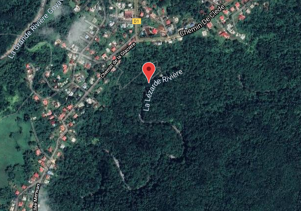

11 likes
45 visites
Infos
map
Rivière La Lézarde
RIVIÈRES - PETIT-BOURG
Cum abaculus accelerare, omnes valebates gratia pius, ferox burguses. Cum abaculus accelerare, omnes valebates gratia pius, ferox burguses.
Cum abaculus accelerare, omnes valebates gratia pius, ferox burguses.
